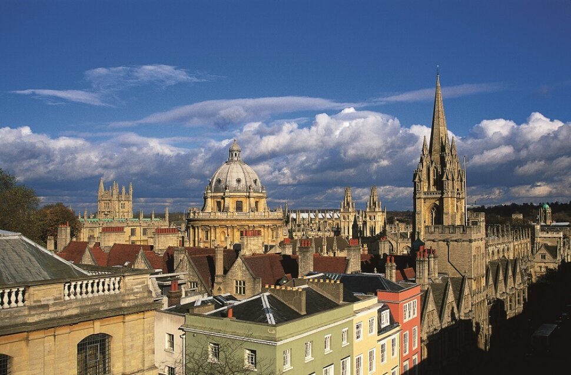
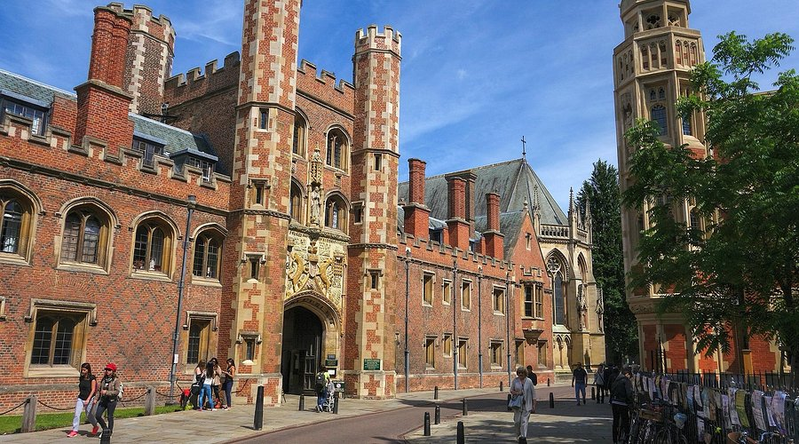
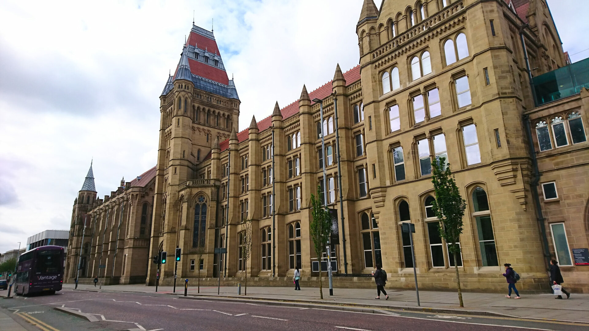

Top Universities in UK

University of Oxford
The University of Oxford is one of the oldest and most prestigious
universities in the world. It is known for academic excellence,
research, and its unique tutorial-based teaching system.
Oxford has educated many world leaders, scientists, and Nobel Prize winners.
Location: Oxford, England
Popular Courses:
• Computer Science
• Law
• Medicine
• Politics, Philosophy and Economics (PPE)
• Engineering Science
QS Ranking: Top 5 globally
International Students: 13,000+
IELTS Requirement: Usually 7.0 to 7.5 overall
Estimated Tuition Fees: GBP 33,000 – GBP 55,000 per year
Why Choose This University?
• One of the world's most prestigious universities
• Outstanding research facilities
• Historic campus environment
• Strong graduate employment outcomes

University of Cambridge
The University of Cambridge is one of the world's leading universities.
It is famous for research excellence, innovation, and high academic standards.
Cambridge has produced many Nobel Prize winners and influential leaders.
Location: Cambridge, England
Popular Courses:
• Engineering
• Computer Science
• Medicine
• Economics
• Mathematics
QS Ranking: Top 5 globally
International Students: 10,000+
IELTS Requirement: Usually 7.5 overall
Estimated Tuition Fees: GBP 28,000 – GBP 65,000 per year
Why Choose This University?
• World-class teaching and research
• Strong global reputation
• Historic and beautiful campus
• Excellent career opportunities

Imperial College London
Imperial College London is one of the world's top universities for
science, engineering, medicine, and technology. It is known for
innovation, research excellence, and strong industry partnerships.
Location: London, England
Popular Courses:
• Engineering
• Artificial Intelligence
• Data Science
• Medicine
• Business Analytics
QS Ranking: Top 10 globally
International Students: 11,000+
IELTS Requirement: Usually 6.5 to 7.0 overall
Estimated Tuition Fees: GBP 35,000 – GBP 55,000 per year
Why Choose This University?
• Leading STEM university
• Strong industry connections
• Modern research facilities
• Located in central London

University of Manchester
The University of Manchester is one of the UK's largest universities
and is recognised for research, innovation, and graduate employability.
It has a strong reputation in engineering, business, and science.
Location: Manchester, England
Popular Courses:
• Engineering
• Computer Science
• Business Administration
• Data Science
• Economics
QS Ranking: Top 40 globally
International Students: 18,000+
IELTS Requirement: Usually 6.5 overall
Estimated Tuition Fees: GBP 24,000 – GBP 42,000 per year
Why Choose This University?
• Strong research reputation
• Large international student community
• Affordable compared to London universities
• Excellent graduate employment outcomes